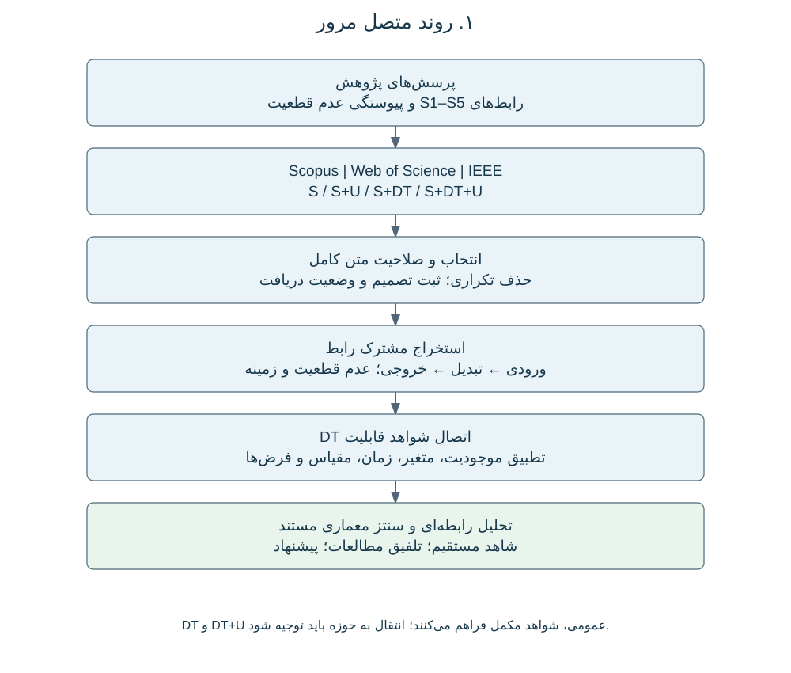
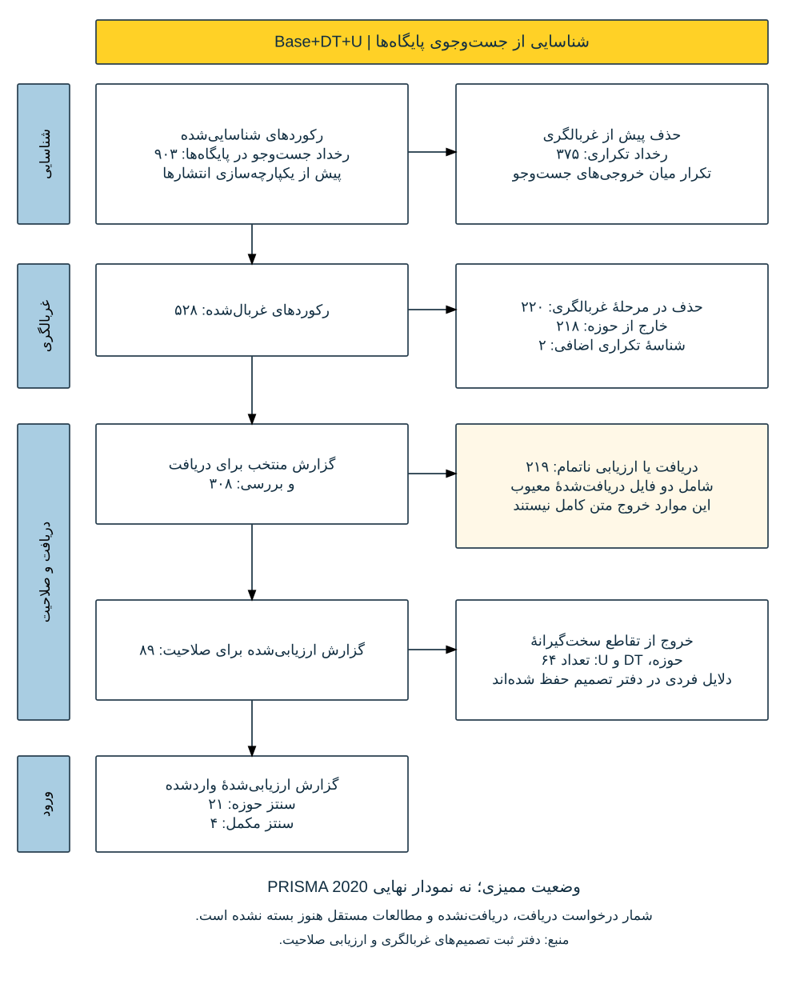
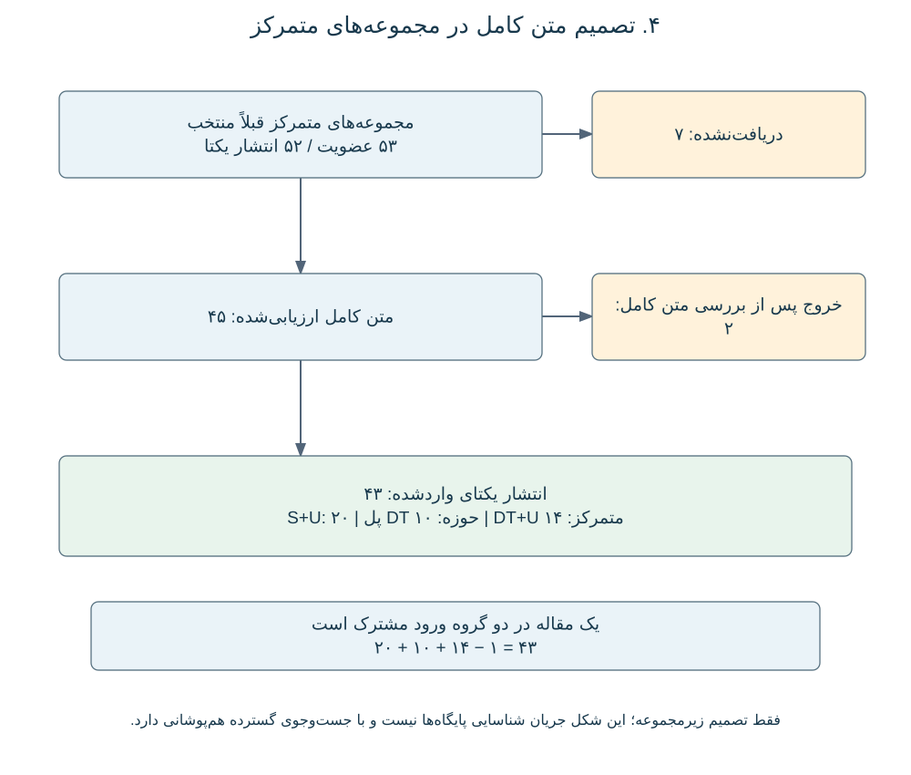

شناخت فرصتهای استفادهٔ چرخشی از مصالح ساختمان مستلزم اتصال اطلاعاتی است که معمولاً برای هدفهای متفاوت تولید میشوند. مشاهدات مکانی، ساختمان را توصیف میکنند؛ مدلهای موجودی، مقدار مصالح آن را برآورد میکنند؛ مدلهای پویا زمان و مقدار خروج مصالح را تخمین میزنند؛ و ارزیابی بازیابی و پیامدهای محیطزیستی مشخص میکند این جریانها برای استفادهٔ بعدی چه معنایی دارند. مطالعات یکپارچه، مبنای مناسبی برای بررسی این مسیر فراهم میکنند. Mastrucci و همکاران (2017) مشخصهیابی مکانی موجودی مصالح را به ارزیابی چرخهٔ عمر سناریوهای پایان عمر متصل کردهاند؛ Ajayebi و همکاران (2020) به برآورد مکانی و زمانی محصولات سازهای برای اقتصاد چرخشی آیندهنگر پرداختهاند؛ و Pei و همکاران (2024) ابزارها و روشهای اتصال تحلیل موجودی مصالح و ارزیابی چرخهٔ عمر در مقیاس شهری را مرور کردهاند. این مطالعات، اهمیت یکپارچگی را نشان میدهند، هرچند مرز سامانه و نحوهٔ مدلسازی تبدیلها در آنها یکسان نیست (Mastrucci et al., 2017; Ajayebi et al., 2020; Pei et al., 2024).
مقایسهٔ این جریانهای کاری، مبنای تفکیک پنج فعالیت تحلیلی است: مشاهده و استنباط ویژگیهای ساختمان (S1)، برآورد موجودی مصالح (S2)، مدلسازی تغییر موجودی و خروج مصالح (S3)، ارزیابی بازیابی و استفادهٔ بعدی (S4)، و ارزیابی پیامدهای محیطزیستی و پشتیبانی تصمیم (S5). این نامگذاری، زبان مشترک مرور حاضر برای مقایسهٔ مطالعات است؛ به این معنا نیست که همهٔ منابع، معماری پنجمرحلهای یکسانی ارائه کردهاند. بعضی فعالیتها در یک مدل ادغام میشوند، بعضی اتصالها پوشش داده نمیشوند و گاهی میان فعالیتها بازخورد وجود دارد. همچنین، چارچوبهای مکانی قدیمی را نباید بهطور پسنگر پیادهسازی GeoAI نامید. هوش مصنوعی مکانی ظرفیت تفسیر اطلاعات مکانی را گسترش میدهد و مطالعات ترکیب تحلیل تصویری و مکانی برای مدلسازی پسماند تخریب، ارتباط مشاهده با حسابداری مصالح را نشان میدهند (Wang et al., 2024; Bogoviku and Waldmann, 2021).
اهمیت این تفکیک در اطلاعاتی است که در مرز فعالیتها مبادله میشود. در S1–S2، ویژگی مشاهدهشده یا استنباطشده باید به تیپ ساختمان، ترکیب مصالح یا ضریب شدت مصرف مرتبط شود. در S2–S3، موجودی به برآوردی از زمان و مقدار خروج مصالح تبدیل میشود. مطالعات رابطهٔ اندازهٔ ساختمان با شدت مصرف مصالح و نقش فرضهای طول عمر نشان میدهند که این اتصالها، عملیات مدلسازیاند و صرفاً جابهجایی عدد نیستند (Miatto et al., 2023; Miatto et al., 2017). برآورد پاییندست ممکن است به همان طبقهبندی یا پارامتر نامطمئنی وابسته باشد که در محاسبهٔ بالادست استفاده شده است؛ مستقل فرضکردن این برآوردها میتواند معنای ارزیابی مشترک را تغییر دهد.
در مرز بعدی، پرسش دیگری مطرح میشود: مصالحی که خروج آنها پیشبینی شده، الزاماً منبع ثانویهٔ قابل استفاده نیستند. پژوهشهای گذرنامهٔ مصالح به اطلاعات لازم برای مدیریت پایان عمر میپردازند و ارزیابی احتمالاتی قابلیت بازاستفاده، مناسببودن فنی اجزا را بررسی میکند (Honic et al., 2021; Rakhshan et al., 2021). این مطالعات نیازهای اطلاعاتی فاصلهٔ میان خروج مصالح و استفادهٔ بعدی را آشکار میکنند. شرایط برداشت، جداسازی، کیفیت و تخصیص به مسیر بازاستفاده یا بازیافت باید مشخص شود تا پیامدهای محیطزیستی قابل تفسیر باشند. مقایسهٔ روشهای ارزیابی محیطزیستی بازاستفادهٔ اجزای ساختمان نیز اهمیت نحوهٔ بازنمایی استفادهٔ بعدی را نشان میدهد (De Wolf et al., 2020). بنابراین، S3–S4 و S4–S5 حتی در مدلهایی که چند فعالیت را همزمان محاسبه میکنند، مرزهای تحلیلی معناداری هستند.
عدم قطعیت باید در همین زنجیرهٔ تبدیلها تفسیر شود. Michiels و Geeraerd (2020) در بررسی انتشار و نمایش عدم قطعیت در ارزیابی چرخهٔ عمر، میان ناکاملبودن دانش و تغییرپذیری تمایز میگذارند (Michiels and Geeraerd, 2020). این تمایز برای مرور حاضر ضروری است: تفاوت واقعی ساختمانها، عدم اطمینان دربارهٔ ویژگی استنباطشدهٔ یک ساختمان و سناریوهای جایگزین بازیابی، معنای یکسانی ندارند. توزیع احتمال، بازه، مجموعهٔ سناریوها و توصیف کیفی کیفیت داده نیز اطلاعات متفاوتی ارائه میکنند. ممکن است عدم قطعیت درون یک مدل با دقت بررسی شود، اما بازنمایی آن هنگام ورود خروجی به مدل بعدی حفظ نشود.
در این مرور، «پیوستگی عدم قطعیت» به حفظ قابل ردیابی یا بازنگری صریح اطلاعات عدم قطعیت، وابستگیهای مرتبط و شرایط اعتبار در طول تبدیلها اشاره دارد. این یک مفهوم تحلیلی برای پژوهش حاضر است؛ نه ادعای استفادهٔ همهٔ مطالعات از اصطلاحی مشترک و نه الزام به ثابتماندن مقدار عدم قطعیت. انتشار میتواند توزیع خروجی را تغییر دهد؛ مشاهدهٔ جدید میتواند مبنای بهروزرسانی باشد؛ تجمیع میتواند واحد مکانی تحلیل را عوض کند؛ و تصمیم بازیابی میتواند کمیتی پیوسته را به طبقهٔ صلاحیت تبدیل کند. در مقابل، ممکن است بازه با یک مقدار نقطهای جایگزین شود یا منشأ لازم برای تفسیر آن گزارش نشود. مسئله این است که آیا این تغییر مستند است و در مرحلهٔ بعد قابل استفاده میماند. نبود توضیح کافی در مقاله، بهتنهایی اثبات نمیکند که اطلاعات در اجرای واقعی از دست رفته است.
ادبیات دوقلوی دیجیتال، زمینهٔ دیگری برای بررسی ارتباط میان موجودیت فیزیکی، بازنمایی دیجیتال و فرایندهای بهروزرسانی فراهم میکند. Jones و همکاران (2020) ویژگیهای این مفهوم را در یک مرور سیستماتیک بررسی کردهاند و Boje و همکاران (2020) مسیرهای توسعهٔ دوقلوی معنایی ساختوساز را مطرح کردهاند (Jones et al., 2020; Boje et al., 2020). مرورهای حوزهٔ ساختمان نیز کاربردها و فناوریهای توانمندساز را بررسی میکنند (Opoku et al., 2021; Tuhaise et al., 2023). این مطالعات نشان میدهند که باید قابلیتهای سامانه را بررسی کرد و از نام DT به وجود آنها نرسید. مدل هندسی ممکن است دارایی را بازنمایی کند، بدون آنکه اتصال داده را حفظ کند؛ بازنمایی بهروزشونده ممکن است پایش را ممکن کند، بدون آنکه انتشار احتمالاتی را اجرا کند؛ و معماری مفهومی ممکن است خدماتی را توصیف کند که هنوز عملیاتی نشدهاند.
اختلاف تعریفها در محیط ساختهشده اهمیت بیشتری پیدا میکند. Abdelrahman و همکاران (2025) تعریفها و مؤلفههای DT را میان حوزهها مقایسه کرده و میان دوقلوهای بلادرنگ با عملکرد بالا و دوقلوهای پشتیبان تصمیم بلندمدت تمایز میگذارند (Abdelrahman et al., 2025). تحلیل آنها نشان میدهد که بلادرنگبودن، تبادل دوطرفه و قابلیت پیشبینی را نباید در همهٔ کاربردها به یک اندازه بالغ یا الزامی فرض کرد. برای ارزیابی جریان مصالح، بهروزرسانی ممکن است پس از برداشت میدانی، نوسازی یا تغییر شرایط بازیابی انجام شود. پرسش اصلی این است که آیا زمان و محتوای این بهروزرسانی، اعتبار ارزیابی متصل را حفظ میکند؛ وجود جریان پیوستهٔ حسگر بهتنهایی پاسخ این پرسش نیست.
پژوهشهای دوقلوی آگاه از عدم قطعیت، سازوکارهایی برای بررسی این مسئله فراهم میکنند. Kapteyn و همکاران (2021) پویایی متصل دارایی و دوقلو را در قالب مدل گرافیکی احتمالاتی صورتبندی کرده و کالیبراسیون و بهروزرسانی را در کاربردی مرتبط با هواگرد نشان دادهاند (Kapteyn et al., 2021). Lin و همکاران (2021) نیز کمّیسازی عدم قطعیت و ریسک نرمافزاری را در سامانههای مدیریت و کنترل مبتنی بر DT مرور کردهاند (Lin et al., 2021). این آثار پشتوانهٔ بررسی بازنمایی احتمالاتی وضعیت، وابستگی و بهروزرسانی بهعنوان قابلیت معماری هستند؛ اما اثبات نمیکنند که همین سازوکارها، پیوستگی عدم قطعیت را از مشاهدهٔ ساختمان تا تصمیم مصالح چرخشی برقرار کردهاند. تناسب آنها باید با توجه به موجودیتها، کمیتها، فرایندهای زمانی و شرایط اعتبارسنجی حوزهٔ هدف بررسی شود.
به این ترتیب، سه حوزهٔ ادبیات در رابط فعالیتها به هم میرسند. مطالعات جریان مصالح، کمیتها و تبدیلهای نیازمند پیوستگی را مشخص میکنند؛ پژوهش عدم قطعیت توضیح میدهد چه اطلاعاتی باید حفظ یا بازنگری شود؛ و پژوهش DT راههایی برای اتصال بازنماییها، مشاهدات و خدمات تحلیلی ارائه میکند. مقیاس مکانی، اعتبار زمانی و نیاز اطلاعاتی ذینفعان، شرایط این اتصالها را تعیین میکنند. برای مثال، مقیاسپذیری ساختار نرمافزار بهتنهایی نشان نمیدهد که فرضهای مصالح از ساختمان به محله و منطقه معتبر میمانند. همچنین، نمایش عدم قطعیت در داشبورد، نحوهٔ تولید و انتقال آن را اثبات نمیکند.
مرورهای پیشین مبانی مکملی فراهم کردهاند: Pei و همکاران (2024) اتصال موجودی و LCA، Michiels و Geeraerd (2020) عدم قطعیت و تغییرپذیری، و Abdelrahman و همکاران (2025) تعریفها و مؤلفههای DT را بررسی کردهاند (Pei et al., 2024; Michiels and Geeraerd, 2020; Abdelrahman et al., 2025). مرور حاضر این دیدگاهها را در یک مقایسهٔ مشترک مبتنی بر رابطها به هم متصل میکند: کدام اتصال مرتبط با عدم قطعیت مستقیماً مستند است، کدام اتصال از تلفیق مطالعات سازگار حاصل میشود و کدام پاسخ پیشنهادی به محدودیتی شناساییشده است؟ هدف، سنتز معماری قابل ردیابی به شواهد است؛ بدون پیشفرضگرفتن فقدان همهٔ اتصالها در ادبیات و بدون ادعای پیادهسازی یا اعتبارسنجی یک دوقلوی سرتاسری جدید.
این مرور، شواهد جریان کاری مصالح، عدم قطعیت و قابلیتهای دوقلوی دیجیتال را از طریق یک واحد تحلیلی مشترک به هم متصل میکند: رابط مستند میان دو فعالیت. خانوادههای جستوجو مسیرهای مکمل دسترسی به این شواهد هستند و به مرورهایی با نتیجههای جداگانه تبدیل نمیشوند. چهار پرسش به هم پیوسته، تحلیل را هدایت میکنند: چه تبدیلهایی S1–S5 را متصل میکنند؛ عدم قطعیت در این تبدیلها چه تغییری میکند؛ کدام قابلیت DT با شرایط گزارششده تناسب دارد؛ و این یافتهها چگونه از معماری قابل ردیابی به شواهد پشتیبانی میکنند؟ گزارش انتخاب مطالعات از PRISMA 2020 و مستندسازی جستوجو از PRISMA-S استفاده میکند (Page et al., 2021; Rethlefsen et al., 2021). این راهنماها جایگزین روش استخراج و سنتز شرحدادهشده در ادامه نیستند.
برای انتشار p و رابط i→j، رکورد مشترک استخراج شامل موجودیت، ورودی، تبدیل، خروجی، عدم قطعیت ورودی و خروجی، وابستگیها، کارکرد DT، زمینه و شاهد است. موجودیت میتواند ساختمان، جزء یا مصالح باشد؛ زمینه، واحد مکانی، اعتبار زمانی و نیاز اطلاعاتی استفادهکننده را در بر میگیرد؛ و شاهد شامل شناسهٔ انتشار و محل استناد در صفحه، بخش، معادله یا شکل است. در صورت لزوم، کارکرد DT با «نامرتبط» یا «گزارشنشده» ثبت میشود. به این ترتیب، مطالعهٔ جریان مصالح فاقد DT و مطالعهٔ سازوکار DT میتوانند از طریق یک نیاز اطلاعاتی مشخص مقایسه شوند، بدون ادعای اجرای سامانهای یکسان. شکل ۱ مسیر متصل پژوهش و شکل ۲ منطق اتصال تحلیلها را نشان میدهد.
جستوجوی پایگاهمحور Scopus، مجموعهٔ اصلی Web of Science و IEEE Xplore را پوشش میدهد. Base که با S نیز نمایش داده میشود، به جستوجوهای مرحلهای ساختمان و جریان مصالح اشاره دارد؛ U مخفف عدم قطعیت و DT مخفف دوقلوی دیجیتال است. چهار خانوادهٔ حوزه شامل Base، Base+U، Base+DT و Base+DT+U هستند. جستوجوهای عمومی DT و DT+U نیز شواهد تعریف و سازوکارهای قابل انتقال را فراهم میکنند و منشأ خارج از حوزهٔ آنها حفظ میشود. جستوجوی تکمیلی جریانهای کاری یکپارچه محدودیت سال یا ناشر ندارد. محدودیتهای دقیق هر جستوجو از گزارش همان اجرا استخراج میشود و برای همهٔ اجراهای تاریخی یکسان فرض نمیشود.
در Scopus از TITLE-ABS-KEY و در Web of Science از Topic استفاده میشود که Keywords Plus را نیز در بر میگیرد. میدانهای IEEE و نسخههای تقسیمشدهٔ جستوجو در گزارش اجرا حفظ میشوند. منطق کلی عبارت است از Q(i,k)=B(i,k) AND S(i) AND optional(U) AND optional(DT). در این رابطه، k نسخهٔ کوئری را مشخص میکند؛ زیرا بعضی جستوجوهای تاریخی DT بلوک حوزهٔ گستردهتری از Base داشتهاند. بنابراین، نمودار منطقی خانوادهها به معنای زیرمجموعهبودن لفظبهلفظ تمام کوئریهای تاریخی از یک عبارت پایهٔ یکسان نیست.
جدول ۱ مفاهیم سازماندهندهٔ بازیابی را ارائه میکند. عبارتهای آرشیوشده، شروط حذف و صورت متناسب با هر پایگاه در مکمل S1 و فایل کوئریهای بازیابیشدهٔ S1–S3 حفظ میشوند. جزئیات تاریخیِ بازیابینشده در ممیزی علامتگذاری میشوند و بهعنوان جستوجوی اجراشده بازسازی نمیشوند. مثالهای توضیحی این بخش نیز جستوجوی جدید تلقی نمیشوند.
| بلوک | مفاهیم و نمونهٔ کلیدواژه |
| حوزه B | building stock*؛ existing building*؛ built environment؛ material cadastre*؛ resource cadastre* |
| S1 | GeoAI؛ remote sensing؛ computer vision؛ LiDAR؛ point cloud*؛ building geometry؛ building classification |
| S2 | material stock*؛ material inventor*؛ material intensit*؛ material composition؛ building archetype*؛ quantity takeoff |
| S3 | material flow*؛ dynamic stock*؛ stock turnover؛ service life؛ building lifetime*؛ demolition timing؛ material outflow* |
| S4 | reuse؛ recycl*؛ recover*؛ deconstruction؛ urban mining؛ disassembl*؛ secondary material*؛ reverse logistics |
| S5 | life cycle assessment؛ embodied carbon؛ environmental impact*؛ carbon footprint؛ decision support |
| DT | "digital twin" OR "digital twins" |
| U | uncertaint*؛ probabil*؛ stochastic*؛ Bayesian؛ Monte Carlo؛ sensitiv*؛ variabil*؛ calibrat*؛ robust*؛ بازهٔ پیشبینی و اطمینان |
چهار ترکیب حوزه عبارتاند از B AND S(i)، سپس افزودن U، افزودن DT و افزودن همزمان DT و U. در جستوجوی عمومی DT+U، قید ساختمان و مرحله حذف میشود. اصطلاحات گستردهٔ U پوشش بازیابی را افزایش میدهند، اما وجود تحلیل عدم قطعیت را ثابت نمیکنند؛ حساسیت، کالیبراسیون و استواری باید از متن روش تفسیر شوند. عضویتها پس از حذف تکراری در سطح انتشار ثبت میشوند و همپوشانی واقعی از شناسهها محاسبه میشود، نه از نام کوئری یا جمع تعداد پایگاهها (Rethlefsen et al., 2021).
صلاحیت هر انتشار متناسب با نقش آن در سنتز بررسی میشود. مطالعهٔ حوزه باید فعالیت یا تبدیلی مرتبط با ارزیابی مصالح ساختمان را توضیح دهد. شاهد U باید کمیت، فرض یا تصمیم متأثر و نحوهٔ بررسی آن را مشخص کند؛ اشارهٔ عمومی به عدم قطعیت برای ادعای سازوکار کافی نیست. شاهد DT باید بازنمایی، اتصال داده، بهروزرسانی یا کارکرد تحلیلی را شرح دهد. مقالهٔ معماری میتواند شاهد مفهومی باشد، بدون آنکه پیادهسازی عملیاتی نامیده شود. سازوکارهای خارج از حوزه و مرورهای ثانویه بهصورت شواهد مکمل مشخص میشوند. پوشش تمام پنج مرحله یا نمایش موفق پیوستگی عدم قطعیت شرط ورود نیست.
خروجی اصلی پایگاهها حفظ و DOIها نرمالسازی میشوند. موارد فاقد DOI با شناسهٔ بومی و اطلاعات کتابشناختی بررسی میشوند. عنوان مشابه، DOI متعارض و نسخههای کنفرانسی و مجلهای به تصمیم جداگانه نیاز دارند. تکرار یک انتشار از گزارشهای متعدد یک مطالعه تفکیک میشود. عضویت در چند جستوجو حفظ میشود، بدون افزایش تعداد انتشارات یکتا.
انتخاب از شناسایی، حذف تکراری، غربالگری عنوان و چکیده، دریافت متن کامل، ارزیابی صلاحیت و ورود به سنتز عبور میکند. هویت، کاملبودن و جزئیات روش متن بررسی میشود. چکیده یا پیشنمایش ناقص، مبنای استخراج سازوکار متن کامل نیست. گزارش دریافتنشده یا فاقد امکان ارزیابی کافی وارد سنتز نهایی نمیشود؛ بااینحال، سابقهٔ آن باقی میماند. دریافتنشدن از خروج پس از ارزیابی تفکیک میشود و متن در دسترس اما خواندهنشده، در انتظار بررسی میماند. تعداد هدف برای مقالات نهایی تعیین نمیشود.
برای خروج متن کامل، یک دلیل اصلی و در صورت لزوم توضیح تکمیلی ثبت میشود: خارج از حوزهٔ جریان مصالح؛ فاقد کارکرد مرتبط DT برای سنتز اختصاصی DT؛ فاقد بررسی محتوایی U برای سنتز اختصاصی U؛ یا فاقد جزئیات روش کافی برای نقش تحلیلی مورد نظر. یک مقاله ممکن است از تقاطع سختگیرانهٔ سه حوزه خارج شود، اما برای جریان مکمل مناسب بماند. دلیل و محل شاهد حفظ میشوند و گزارش PRISMA این تفاوتها را منعکس میکند (Page et al., 2021).
انتساب مرحله بر اساس عملیاتی انجام میشود که مقاله واقعاً گزارش کرده است. یال S(i)→S(j) زمانی ثبت میشود که استفادهٔ خروجی بالادست در فعالیت پاییندست مستند باشد؛ ذکر دو مرحله بهتنهایی اتصال را ثابت نمیکند. اتصالهای غیرمجاور و بازخورد نیز حفظ میشوند. جدول ۲ پرسشهای مشترک استخراج را در چهار رابط مجاور مشخص میکند. این جدول دستور بررسی است و نتیجهٔ پیادهسازی همهٔ تبدیلها در مطالعات نیست.
| رابط | تبدیل مورد بررسی | اطلاعات عدم قطعیت برای ردیابی | قابلیت DT برای بررسی تناسب |
| S1→S2 | مشاهده و ویژگی به مقدار مصالح | طبقهبندی، هندسه، شدت مصرف و وابستگی آنها | شناسه، نگاشت معنایی، منشأ و کیفیت داده |
| S2→S3 | موجودی به خروج وابسته به زمان | عدم قطعیت موجودی، طول عمر، بقا و سناریو | بازنمایی وضعیت و زمان، اتصال مدل پویا و نسخهبندی |
| S3→S4 | مصالح خروجی به عرضهٔ قابلبازیابی | زمان، وضعیت، بازده جداسازی، کیفیت و صلاحیت مسیر | بهروزرسانی وضعیت، ردیابی جزء و اتصال خدمت بازیابی |
| S4→S5 | مسیر بازیابی به پیامد و تصمیم | بازده، جایگزینی، تخصیص، ضرایب اثر و فرضهای مشترک | اتصال خدمت ارزیابی، منشأ سناریو و ارتباط با تصمیم |
استخراج میان منبع، ماهیت، بازنمایی و عملیات عدم قطعیت تفاوت میگذارد. عدم قطعیت پارامتر، مدل و سناریو، در حد اطلاعات مقاله از تغییرپذیری مکانی و زمانی جدا ثبت میشود (Michiels and Geeraerd, 2020). بازنمایی میتواند توزیع، نمونهها، بازه، سناریو یا توصیف کیفی کیفیت باشد. کوواریانس، همبستگی، پارامتر مشترک و فرض صریح استقلال نیز ثبت میشوند. نبود اطلاعات وابستگی به معنای استقلال کدگذاری نمیشود.
وضعیت رابط با کدهای عملیاتیِ قابل همزمانی ثبت میشود: انتقال، تبدیل، بهروزرسانی، ورود عدم قطعیت جدید و کنارگذاشتن مستند. ناکافیبودن گزارش، وضعیت جداگانه دارد. کاهش عدم قطعیت به مقایسه و شاخص مشخص نیاز دارد و صرف بهبود دقت پیشبینی آن را اثبات نمیکند. بیان نویسندگان از تفسیر مرورگر تفکیک میشود. هر ادعای سازوکاری، محل شاهد و یادداشت کوتاه دارد. مقیاس، تفکیک زمانی، محرک بهروزرسانی، دورهٔ اعتبار و نقش اطلاعاتی ذینفعان بهعنوان شرایط همان رابط ثبت میشوند.
کدگذاری DT تعریف نویسندگان، مرجع فیزیکی، بازنمایی دیجیتال، اتصال داده، جهت و تناوب بهروزرسانی، خدمت تحلیلی و بلوغ نشاندادهشده را ثبت میکند (Jones et al., 2020; Boje et al., 2020; Abdelrahman et al., 2025). بلادرنگبودن یا کنترل دوطرفه الزام جهانشمول نیست و مدل BIM یا GIS نیز خودکار دوقلوی عملیاتی محسوب نمیشود. تمایز مدلسازی احتمالاتی از بهروزرسانی نشاندادهشدهٔ دارایی و دوقلو، با اتکا به ادبیات DT و عدم قطعیت بررسی میشود (Kapteyn et al., 2021; Lin et al., 2021).
برای هر رابط، زنجیرهٔ استدلال چنین است: محدودیت مشاهدهشده ← نیاز اطلاعاتی ← قابلیت گزارششدهٔ DT ← شرایط سازگاری ← اتصال معماری قابل پشتیبانی. سازگاری از نظر موجودیت، معنای متغیر، واحد، محدودهٔ مکانی، افق زمانی و بازنمایی وابستگی بررسی میشود. برای مثال، بهروزرسانی بیزیِ یک حوزهٔ دیگر صرفاً به دلیل حضور عدم قطعیت به S3–S4 نسبت داده نمیشود؛ باید مشخص شود کدام وضعیت مرتبط با بازیابی، با چه مشاهده و چه فرضی بهروزرسانی میشود. اگر این ارتباط از تلفیق مطالعات حاصل شده باشد، بهعنوان سنتز ثبت میشود، نه پیادهسازی اثباتشده در حوزه.
همان رکوردهای رابط، سه ماتریس متصل تولید میکنند: رابط × عملیات عدم قطعیت؛ رابط × قابلیت DT؛ و قابلیت DT × عملیات عدم قطعیت. هر خانهٔ دارای شاهد به شناسهٔ انتشار و شواهد پشتیبان متصل است. جدول اتصال چهارم هر سه بُعد را به هم پیوند میدهد و مشخص میکند ارتباط درون یک مطالعه گزارش شده یا از تلفیق مطالعات حاصل شده است. کنار هم گذاشتن مقالههای مستقل، خودبهخود زنجیرهٔ کامل S1–S5 را اثبات نمیکند. شکل ۲ رکورد مشترکی را نشان میدهد که این تحلیلها را متصل نگه میدارد.
برای مجموعهٔ واجد شرایط C، مقدار n(i,u,d) تعداد انتشارات یکتایی است که رابط i، عملیات عدم قطعیت u و قابلیت DT با نماد d را همراه یکدیگر پشتیبانی میکنند. شمارش مستقیم درون مقاله و سنتز میانمطالعهای جدا گزارش میشوند؛ اتصال استنباطی فراوانی تجربی را افزایش نمیدهد. پوشش هر ویژگی، نسبت تعداد انتشارات پشتیبان به تعداد انتشارات واجد شرایط و ارزیابیشدهٔ همان تحلیل است. مخرج و موارد گزارشنشده همراه شکل ارائه میشوند. در کدگذاری چندبرچسبی، مجموع دستهها میتواند از تعداد انتشار یکتا بیشتر باشد؛ اهمیت تفکیک شمار مقاله از مشارکت در دستهها در روش Falsafi و همکاران (2025) نیز دیده میشود (Falsafi et al., 2025).
خروجیهای توصیفی شامل نقشهٔ حرارتی شواهد، نمودار همپوشانی و شبکهٔ رابطهاست. خط، اتصال کدگذاریشده را نشان میدهد نه علیت؛ ضخامت، تعداد تعریفشده را نشان میدهد نه اثربخشی. شمارش زمانیِ جمعشدهٔ پایگاهها، رخداد پایگاهی نامیده میشود، مگر حذف تکراری در سطح رکورد انجام شده باشد. برای دستههای همپوشان، اعتبار آزمون آماری فرض نمیشود و اختلاف بصری بدون طراحی آزمون مناسب «معنادار» نام نمیگیرد. پیامدهای ناهمگون در فراتحلیل اثربخشی تجمیع نمیشوند.
اجزای معماری در سه وضعیت قرار میگیرند: پشتوانهٔ مستقیم، تلفیق مطالعات سازگار، یا پیشنهاد پاسخ به گپ مستند. بنابراین هر ماژول و اتصال، هم به شاهد و هم به نیاز رابط مرتبط میشود. محدودیت گزارششده، فقدان گزارش و نبود موضوع در مجموعهٔ بازیابیشده یکسان نیستند. ساختار حاصل، سنتز مفهومی مرور است و اثربخشی عملیاتی و تعمیم بین مقیاسها به اعتبارسنجی بعدی نیاز دارد.
ارزیابی شامل منشأ داده، بیان فرضها، برخورد با وابستگی، اعتبارسنجی، شرایط سناریو و بازتولیدپذیری است. نمایش مصنوعی، آزمون تجربی و پیشنهاد مفهومی از هم تفکیک میشوند. برای طرحهای ناهمگون، امتیاز عددی واحد تحمیل نمیشود. دفتر تصمیم، منبع، نقش، دلیل صلاحیت و محل شاهد را نگه میدارد و کد و دادهٔ شمارش همراه شکلها ارائه میشوند. جایی که غربالگری مستقل دو پژوهشگر انسانی مستند نیست، چنین فرایندی ادعا نمیشود.
شکل ۳ نمودار وضعیت ممیزی به سبک PRISMA برای جستوجوی گستردهٔ Base+DT+U است و جریان نهایی همهٔ سناریوها نیست. تعدادها از دفتر تصمیم آرشیوشده خوانده میشوند. شکل ۴ تصمیمهای مجموعههای متمرکزِ قبلاً منتخب را نشان میدهد؛ این مجموعهها زیرمجموعههایی دارای همپوشانیاند، نه جستوجوهای مستقل افزوده. مسیرهای گستردهٔ Base، Base+U، Base+DT و DT عمومی هنوز تا Included بسته نشدهاند. موارد در انتظار بررسی وارد سنتز محتوایی جاری نمیشوند، اما در ممیزی قابل مشاهده میمانند. تکمیل تصمیمها شرط جایگزینی این شکلها با نمودار نهایی قابل ارسال است. این یادداشت وضعیت باید پس از بستهشدن مرور بهروزرسانی شود، نه اینکه در زمان ناتمامبودن کار حذف شود.



TITLE-ABS-KEY(("building stock*" OR "building material stock*" OR "urban material stock*" OR "built environment stock*" OR "building inventor*" OR "building archetype*" OR "material cadastre*" OR "resource cadastre*" OR "existing building*" OR "building portfolio*" OR "urban building*" OR "built stock*") AND (reuse OR recycl* OR recover* OR deconstruction OR "urban mining" OR "secondary material*" OR "material passport*" OR matching OR logistics OR separab* OR disassembl* OR circular* OR "reverse logistics") AND (uncertaint* OR probabil* OR stochastic* OR Bayesian OR "Monte Carlo" OR sensitiv* OR variabil* OR calibrat* OR robust* OR "decision confidence" OR "value of information" OR "prediction interval*" OR "confidence interval*"))عبارتهای آرشیوشدهٔ کامل در مکمل S1 هستند؛ این نمونه جستوجوهای تاریخی را بازتعریف نمیکند.
Abdelrahman, Mahmoud; Macatulad, Edgardo; Lei, Binyu; Quintana, Matias; Miller, Clayton; Biljecki, Filip. 2025. What is a Digital Twin anyway? Deriving the definition for the built environment from over 15,000 scientific publications. Building and Environment. https://doi.org/10.1016/j.buildenv.2025.112748
Ajayebi, Atta; Hopkinson, Peter; Zhou, Kan; Lam, Dennis; Chen, Han-Mei; Wang, Yong. 2020. Spatiotemporal model to quantify stocks of building structural products for a prospective circular economy. Resources, Conservation and Recycling. https://doi.org/10.1016/j.resconrec.2020.105026
Bogoviku, Lorenc; Waldmann, Danièle. 2021. Modelling of mineral construction and demolition waste dynamics through a combination of geospatial and image analysis. Journal of Environmental Management. https://doi.org/10.1016/j.jenvman.2020.111879
Boje, Calin; Guerriero, Annie; Kubicki, Sylvain; Rezgui, Yacine. 2020. Towards a semantic Construction Digital Twin: Directions for future research. Automation in Construction. https://doi.org/10.1016/j.autcon.2020.103179
De Wolf, Catherine; Hoxha, Endrit; Fivet, Corentin. 2020. Comparison of environmental assessment methods when reusing building components: A case study. Sustainable Cities and Society. https://doi.org/10.1016/j.scs.2020.102322
Falsafi, Amirmehrab; Togiani, Amir; Colley, Ashley; Varis, Juha; Horttanainen, Mika. 2025. Life cycle assessment in circular design process: A systematic literature review. Journal of Cleaner Production. https://doi.org/10.1016/j.jclepro.2025.146188
Honic, Meliha; Kovacic, Iva; Aschenbrenner, Philipp; Ragossnig, Arne. 2021. Material Passports for the end-of-life stage of buildings: Challenges and potentials. Journal of Cleaner Production. https://doi.org/10.1016/j.jclepro.2021.128702
Jones, David; Snider, Chris; Nassehi, Aydin; Yon, Jason; Hicks, Ben. 2020. Characterising the Digital Twin: A systematic literature review. CIRP Journal of Manufacturing Science and Technology. https://doi.org/10.1016/j.cirpj.2020.02.002
Kapteyn, Michael G.; Pretorius, Jacob V. R.; Willcox, Karen E.. 2021. A probabilistic graphical model foundation for enabling predictive digital twins at scale. Nature Computational Science. https://doi.org/10.1038/s43588-021-00069-0
Lin, Linyu; Bao, Han; Dinh, Nam. 2021. Uncertainty quantification and software risk analysis for digital twins in the nearly autonomous management and control systems: A review. Annals of Nuclear Energy. https://doi.org/10.1016/j.anucene.2021.108362
Mastrucci, Alessio; Marvuglia, Antonino; Popovici, Emil; Leopold, Ulrich; Benetto, Enrico. 2017. Geospatial characterization of building material stocks for the life cycle assessment of end-of-life scenarios at the urban scale. Resources, Conservation and Recycling. https://doi.org/10.1016/j.resconrec.2016.07.003
Miatto, Alessio; Schandl, Heinz; Tanikawa, Hiroki. 2017. How important are realistic building lifespan assumptions for material stock and demolition waste accounts?. Resources, Conservation and Recycling. https://doi.org/10.1016/j.resconrec.2017.01.015
Miatto, Alessio; Fasanella, Ygor; Mainardi, Marta; Borin, Paolo. 2023. Correlation between building size and material intensity in residential buildings. Resources, Conservation and Recycling. https://doi.org/10.1016/j.resconrec.2023.107093
Michiels, Freya; Geeraerd, Annemie. 2020. How to decide and visualize whether uncertainty or variability is dominating in life cycle assessment results: A systematic review. Environmental Modelling \& Software. https://doi.org/10.1016/j.envsoft.2020.104841
Opoku, De-Graft Joe; Perera, Srinath; Osei-Kyei, Robert; Rashidi, Maria. 2021. Digital twin application in the construction industry: A literature review. Journal of Building Engineering. https://doi.org/10.1016/j.jobe.2021.102726
Page, Matthew J.; McKenzie, Joanne E.; Bossuyt, Patrick M.; others. 2021. The PRISMA 2020 statement: an updated guideline for reporting systematic reviews. BMJ. https://doi.org/10.1136/bmj.n71
Pei, Wanyu; Biljecki, Filip; Stouffs, Rudi. 2024. Techniques and tools for integrating building material stock analysis and life cycle assessment at the urban scale: A systematic literature review. Building and Environment. https://doi.org/10.1016/j.buildenv.2024.111741
Rakhshan, Kambiz; Morel, Jean-Claude; Daneshkhah, Alireza. 2021. Predicting the technical reusability of load-bearing building components: A probabilistic approach towards developing a Circular Economy framework. Journal of Building Engineering. https://doi.org/10.1016/j.jobe.2021.102791
Rethlefsen, Melissa L.; Kirtley, Shona; Waffenschmidt, Siw; others. 2021. PRISMA-S: an extension to the PRISMA Statement for Reporting Literature Searches in Systematic Reviews. Systematic Reviews. https://doi.org/10.1186/s13643-020-01542-z
Tuhaise, Valerian Vanessa; Tah, Joseph Handibry Mbatu; Abanda, Fonbeyin Henry. 2023. Technologies for digital twin applications in construction. Automation in Construction. https://doi.org/10.1016/j.autcon.2023.104931
Wang, Siqin; Huang, Xiao; Liu, Pengyuan; Zhang, Mengxi; Biljecki, Filip; Hu, Tao; Fu, Xiaokang; Liu, Lingbo; Liu, Xintao; Wang, Ruomei; Huang, Yuanyuan; Yan, Jingjing; Jiang, Jinghan; Chukwu, Michaelmary; Reza Naghedi, Seyed; Hemmati, Moein; Shao, Yaxiong; Jia, Nan; Xiao, Zhiyang; Tian, Tian; Hu, Yaxin; Yu, Lixiaona; Yap, Winston; Macatulad, Edgardo; Chen, Zhuo; Cui, Yunhe; Ito, Koichi; Ye, Mengbi; Fan, Zicheng; Lei, Binyu; Bao, Shuming. 2024. Mapping the landscape and roadmap of geospatial artificial intelligence (GeoAI) in quantitative human geography: An extensive systematic review. International Journal of Applied Earth Observation and Geoinformation. https://doi.org/10.1016/j.jag.2024.103734